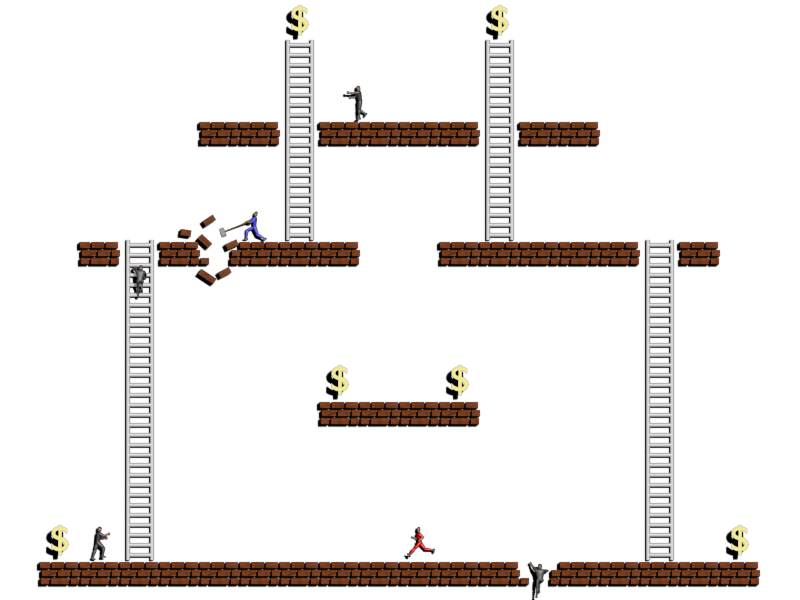

The ICPC Challenge gives programming teams and their coaches a chance to work on a different kind of problem. Working with their coach, teams implement a player and compete against other teams' players in a new game called CodeRunner. Preliminary matches during the two-week coding phase will let teams know how well their players are doing. A final double-elimination competition among all the submitted players will decide whose player is the best.
Coding and preliminary matches will run from the start of the UTC day on June 3 to the end of the UTC day on June 16. World Finals teams can work on developing their players, submit preliminary player versions, compete in matches against other teams' players and see how their strategy compares. After the coding phase ends, a tournament among the latest versions of all teams' players will be presented as part of the 2013 ICPC World Finals events in Saint Petersburg.
The 2013 ICPC Challenge game, CodeRunner, has a playing field that looks something like the following figure. A red player and a blue player compete to collect gold, while avoiding several enemies that are moving around the map. Each player directly controls a single runner character, who can move left and right, climb up and down ladders and break temporary holes in the floor with a large hammer. In addition to collecting gold, players earn points by exploring the map and trapping enemies and their opponent in holes. The game rules describe how to examine the state of the map and control the runner. All you have to do is figure out how to win.
Your player will be implemented as a stand-alone program in C++ or Java. You will interact with the game by reading information about the game world from standard input and writing your next move to standard output. The sample players can be a quick way for you to get started writing your player and interacting with the game. A more detailed description of the execution environment explains the input and output format for your player as well as other rules for what your player can do.
Once you have a player written, you can run it by starting up the game and pointing it to your player's executable. If you have written a player in C++, you can run it against the sample Java player using a command like:
java -jar coderunner.jar -player cpp myPlayer -player java -cp java_example GoToNearestGoldPlayer
If your player is implemented in Java, you can run it against the example player using a command like:
java -jar coderunner.jar -player java -cp java_example GoToNearestGoldPlayer -player java MyPlayer
The more detailed usage instructions describe more options for starting up the game, including how to capture a match as a trace file, how to debug your player during execution, etc.
During the coding phase of the competition, players can access the competition through the ICPC Challenge site at: http://icpc.baylor.edu/challenge/ From this page, participants will be able to login to the submission system, submit player code, and see how they are doing in preliminary matches. The latest working submission is considered the participant's current player. The final tournament and the nightly preliminary matches will use the most recently submitted player code that successfully builds.
All source code and supporting files for a player must be submitted at the same time. From the submission interface, select each source file that's part of your player, and then press the "Upload Files" button to upload the whole thing. If you forget to submit an important file, you will need to re-submit everything to have a working player.
The ICPC Challenge website, http://icpc.baylor.edu/challenge/, will provide regularly updated information during the coding phase of the competition. If corrections or clarifications are needed, they will be linked from here.